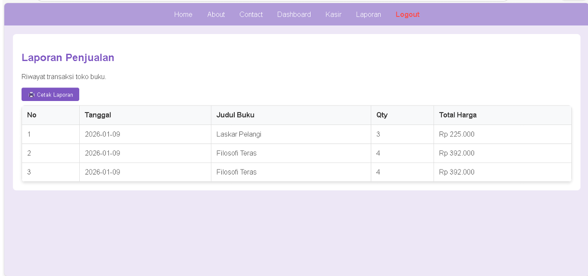
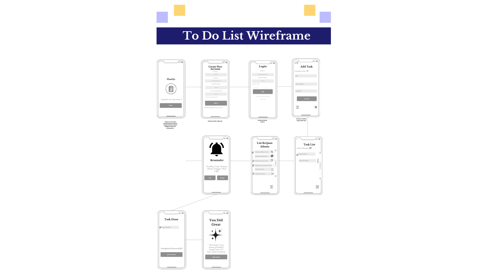

Biodata Bunga Mellyana
| 👤 Nama | Bunga Mellyana Tenis |
| 🆔 NIM | 312410100 |
| 🎓 Jurusan | Teknik Informatika |
| 🏫 Universitas | Universitas Pelita Bangsa |
| 🎂 Tempat & Tanggal Lahir | Purwakarta, 15 Mei 2004 |
| 🏠 Alamat | Kp. Kebon Kopi RT002/RW001, Desa Sukadami, Cikarang Selatan, Bekasi |
| 📞 No HP / Email | 085692488559 / anamelly155@gmail.com |
| 🎓 Pendidikan Terakhir | SMK Bintang Harapan – Teknik Komputer dan Jaringan |
| 💼 Pengalaman Kerja | PT. Linggo Sukses Abadi – Admin Data Entry (Agustus 2023 – Maret 2026) |
| 🛠 Keahlian | Microsoft Office, Bahasa Inggris (Dasar) |
| 🎯 Bidang yang diminati | Admin / Operator Produksi |
| ❤️ Hobi | Membaca, menulis, bermain badminton |
| 👨👩👧 Nama Keluarga | Ibu: Enny, Ayah: Michael, Kakak: Ricky dan Novan |
| 🤝 Sahabat Dekat | Ayu, Lia, Reva, Saskia |
Saya adalah mahasiswa Teknik Informatika yang memiliki minat dalam pengembangan website dan desain antarmuka.
Portfolio

Membuat Laporan Penjualan Buku
Pembuatan Laporan Penjualan Buku menggunakan HTML, XAMPP, dan PHP.

UI Design
Desain tampilan aplikasi berbasis mobile.

Website Profile
Website biodata lengkap dengan portfolio pekerjaan.

Sistem Inventaris Barang
Project database menggunakan MySQL.
Artikel
Pemasaran dan Perdagangan Berdasarkan Nilai Moral Agama dalam Kehidupan Sehari-hari
Ditulis oleh Bunga Mellyana | 2026
a. Konsep dan Karakteristik
Menurut saya, pemasaran bukan hanya tentang menjual produk, tetapi juga tentang bagaimana kita membangun kepercayaan dengan konsumen. Dalam banyak ajaran agama, nilai seperti kejujuran, tanggung jawab, dan saling menghargai sangat ditekankan.
Karakteristik pemasaran yang baik adalah jujur dalam menyampaikan informasi, tidak melebih-lebihkan produk, serta bertanggung jawab terhadap apa yang dijual. Dengan begitu, hubungan antara penjual dan pembeli bisa terjalin dengan baik.
b. Prinsip Pemasaran
Dalam pandangan saya, ada beberapa prinsip penting dalam pemasaran yang sesuai dengan nilai moral agama, yaitu:
- Kejujuran dalam promosi produk
- Tanggung jawab terhadap kualitas barang
- Keadilan dalam menentukan harga
- Menghargai konsumen tanpa membedakan
Prinsip-prinsip ini penting agar usaha yang dijalankan bisa bertahan lama dan dipercaya oleh pelanggan.
c. Etika dalam Pemasaran
Etika dalam pemasaran sangat berpengaruh terhadap kepercayaan konsumen. Seorang penjual harus bersikap sopan, tidak memaksa pembeli, dan tidak memberikan informasi yang menyesatkan.
Contohnya, dalam jualan online di Instagram atau WhatsApp, kita harus menampilkan foto produk yang sesuai dengan kondisi asli dan memberikan deskripsi yang jujur agar pembeli tidak merasa tertipu.
d. Strategi dalam Pemasaran
Strategi pemasaran yang sesuai dengan nilai moral agama bisa dilakukan dengan cara sederhana, seperti:
- Promosi yang jujur dan tidak berlebihan
- Memberikan pelayanan yang ramah
- Menjaga kualitas produk
- Memanfaatkan media sosial secara positif
Dengan strategi ini, bisnis tidak hanya berkembang tetapi juga mendapatkan kepercayaan dari banyak orang.
Penutup
Menurut saya, pemasaran yang baik adalah pemasaran yang tidak hanya mengejar keuntungan, tetapi juga menjaga kepercayaan pelanggan. Dengan menerapkan nilai moral seperti kejujuran dan tanggung jawab, bisnis dapat berkembang lebih lama dan memiliki reputasi yang baik.
Referensi
Kontak
Email: anamelly155@gmail.com
No HP: 085692488559